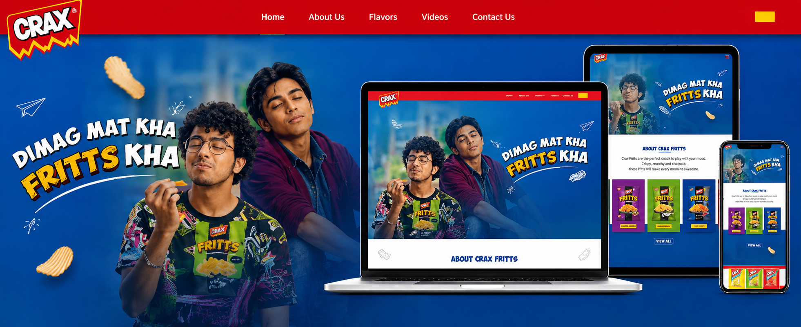
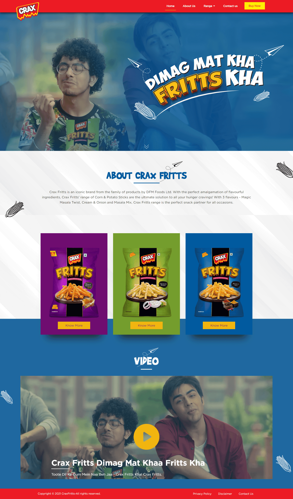
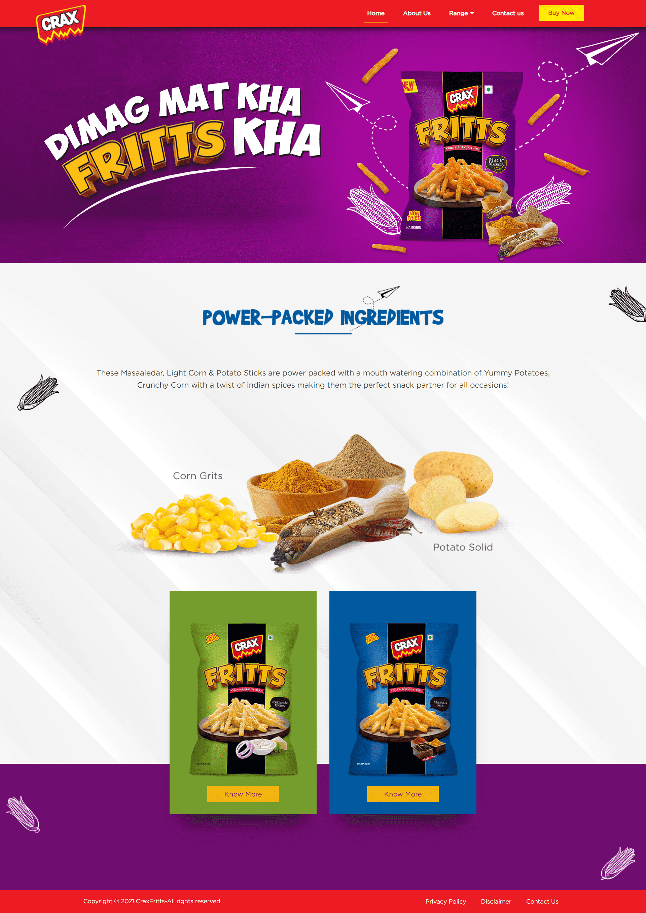

Make the brand feel playful and youth-led without letting visual energy interrupt navigation or comprehension.
← Back to workSnack light.
CRAX Fritts · Product Website
Snack light.
Think less.

Project overview
A snack break
with its own attitude.
Fritts turns fries-shaped corn-and-potato sticks into a playful answer to overthinking: “Dimaag Mat Kha, Fritts Kha.”
The website translates that quick, youthful attitude into a focused digital experience—introducing the product, separating flavours, carrying film content and staying useful across every screen.
- Idea
- Think Less
- Product
- Corn + Potato
- Expression
- Youthful
- Build
- Responsive
The brand behaviour
A light snack.
A lighter state of mind.
The experience does not over-explain the fun. It uses a direct line, expressive photography and doodle-like movement to create a world that feels spontaneous rather than manufactured.
Every interaction supports the same simple behaviour: pause the noise, pick a flavour and enjoy the break.
The experience challenge
Build personality.
Protect product clarity.
Give each flavour a distinct moment while preserving one recognisable Fritts world across the website.
The flavour system
Different moods.
One easy choice.
The product range uses colour as navigation. Purple, green and blue create immediate flavour distinction while pack structure and typography maintain family recognition.
The website experience
Attitude up front.
Detail when it matters.
The homepage moves quickly from the campaign idea to range and film. Product pages then create room for ingredients, flavour expression and adjacent choices.
Brand destinationAttitude, range and campaign film

Flavour destinationProduct story, ingredients and range discovery

The interaction language
Fast to feel.
Easy to follow.
Campaign-led entry
The central idea lands before users need to decide where to go.
Colour-led range
Flavour worlds turn recognition into a practical browsing device.
Film as proof
Campaign video extends the tone without disrupting product discovery.
Responsive hierarchy
Message, pack and action stay ordered across laptop, tablet and mobile.
The outcome
A product world
that never feels heavy.
A responsive destination that makes the Fritts proposition immediate, the flavour range distinct and the brand attitude consistent from campaign to product detail.
Clear attitude
The campaign voice becomes a recognisable digital behaviour.
Distinct flavours
Colour and pack architecture make range exploration intuitive.
Mobile continuity
The central story and product journey remain intact on smaller screens.
Dimaag Mat Kha.Fritts Kha.
Building a product world?